OPTIMISE MS is a system for recording data including demographics, clinical events, treatments and tests according to CDISC standards for Multiple Sclerosis. OPTIMISE MS allows researchers to better monitor MS patients’ progress, record outcomes and evaluate treatments.
The user can enter demographic, medical history and family medical history, clinical event, visit, test and treatment data.
OPTIMISE MS can be used in two modes; the offline mode when networking is enabled and the online mode when networking is disabled.
Logging in
To start using the OPTIMISE portal first open your favourite modern browser.
Then, enter the hosting address in the address bar.
You should see the following screen.

Enter the user name and password (in the boxes as shown below) that were given to you and click the Login button. The default username is admin and the default password is admin.
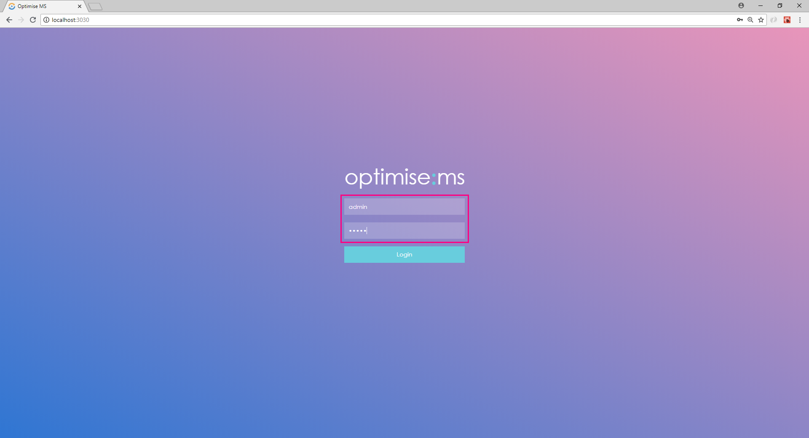If the log-in is unsuccessful, you will get a message. Re-enter user credentials and click Login.

If the log-in is successful, you should see the following screen.
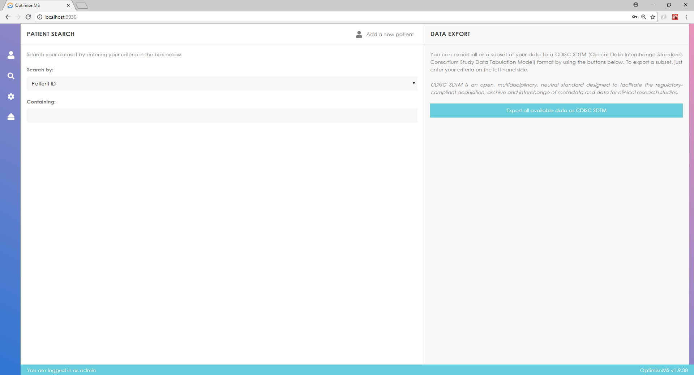Searching patients
You can search the database using the user-friendly search tool available after successful log-in. Click on the box labelled 'Containing' and enter the patient ID to search for a patient.

As you type in the input box labelled 'Containing:', the patients with ID that contain the text you entered will be shown in the area below the search box. Basic patient information for each listed ID is also shown. If no patients are listed, you may create a new patient with the ID you entered- please see section Creating a new patient.

Choose from the list of patient IDs below the search box by clicking on the patient box. To view and/or enter data for patient with ID OPT1, for example, click on the respective box (highlighted).
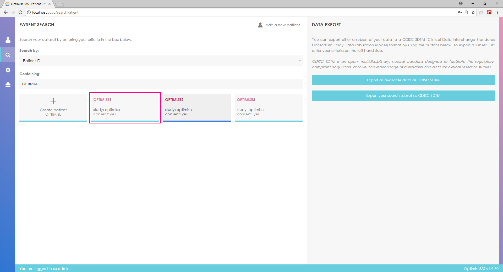The timeline and a summary of the patient's Medical History information will be available in the left panel. An overview that includes the patient profile, the primary diagnosis and other sections is available in the right panel. You may add, edit, or delete data for these sections as described in 'Entering patient data' below.

To exit the patient's profile, click on X near the top centre of the page as shown below.
You will then be directed to the home page that includes the Patient Search tool where you can search or create patients.
Creating a new patient
In order to create a new patient, click on the search box button and enter the patient ID. If there are no patients with the entered ID, you may create a new patient by clicking the button as shown below.
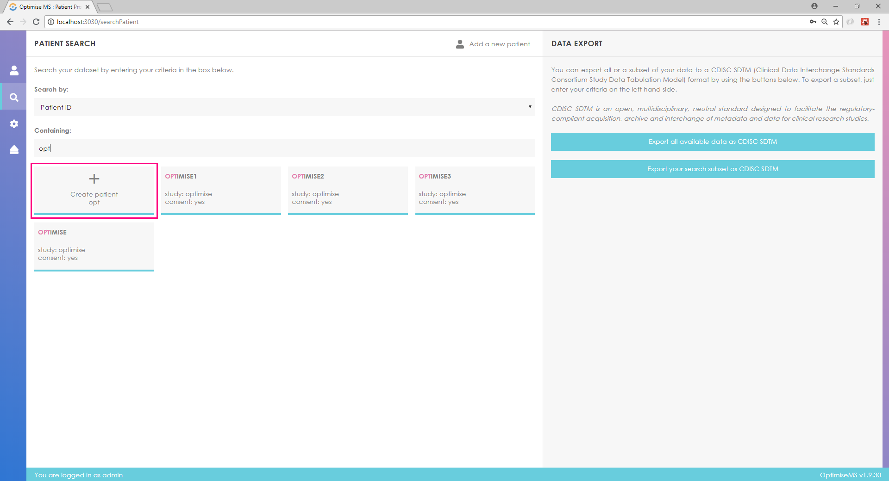Once you click the Create button, you should fill the new patient profile form in the right panel that includes the patient consent status. You need to set the consent status for patient data sharing to Yes or No at this stage.

Then click Submit to create the patient.
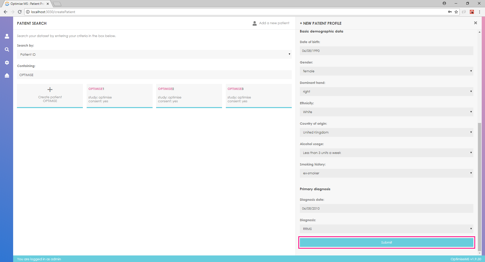A warning message will be shown if any of the fields are empty or unselected when you click Submit. All the fields in this form are required in order to add the patient to the system. If you see the following message, please ensure the new patient profile form is completed before clicking Submit.

If the patient creation is successful, you should see the following page. Please note that sections such as Pregnancy are conditional on the patient profile (for example, sex in this case) and may be unavailable for some patients.
In order to return to the patient search page, click on X near the top centre of the screen highlighted below.
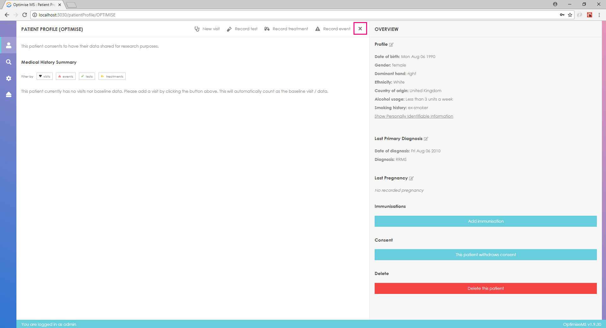Updating patient consent
You may update the patient consent status at any time. Go to the main patient profile page and use the highlighted control in the right panel to set the status of patient consent.

The current patient consent status is always visible on screen. Clicking the consent button in the right panel updates this label accordingly.
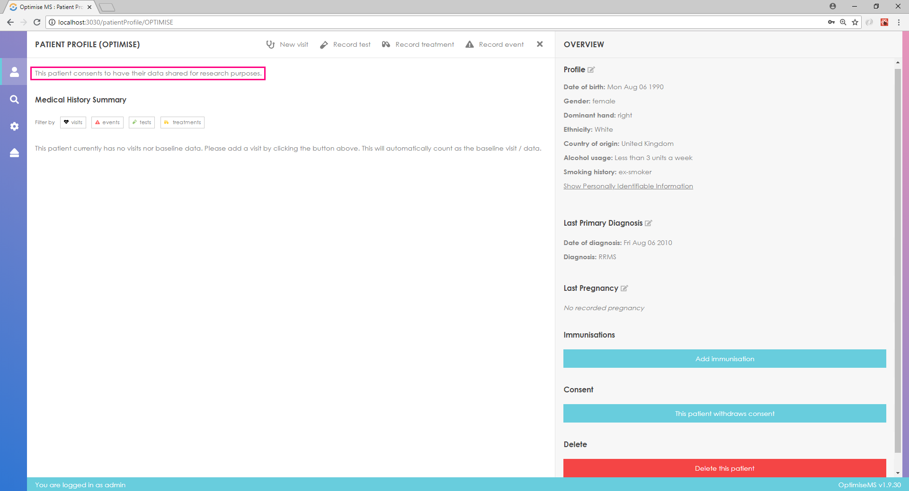Deleting a patient
To delete a patient click on Delete this patient.

Click on YES, I AM SURE! to confirm the deletion or click X at top right corner of the pop-up message box to cancel.

Entering patient data
The Profile section in the Overview panel contains the profile data entered during patient creation. In order to edit the Profile section click the button as shown below.

Edit the form as necessary and click Submit.
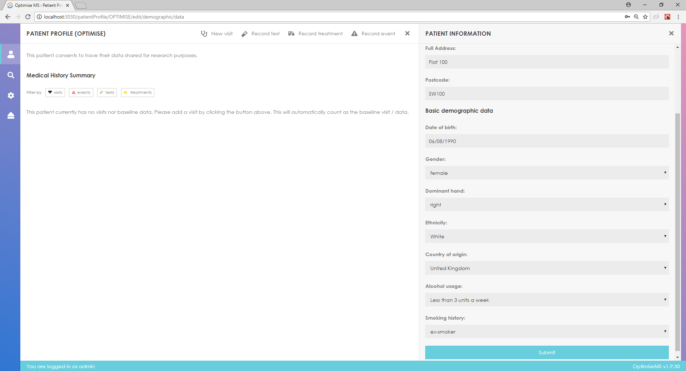To cancel, click on X at the top right corner.

Similarly, the Primary Diagnosis section in the Overview panel contains the diagnosis data entered during patient creation. In order to edit this click the button as shown below.

Edit the form as necessary and click Submit.

To cancel, click on X at the top right corner.

In order to enter Immunisation data, click on Add immunisation.
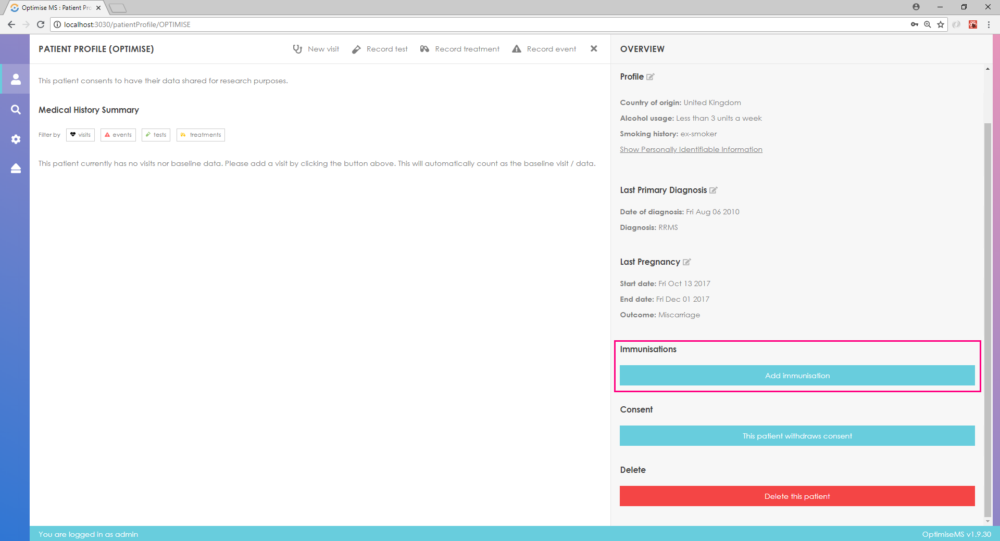Enter data in the form shown below. Click Submit to add the new immunisation or Cancel.
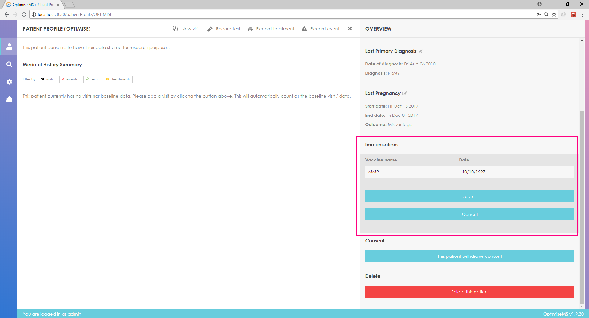In order to enter Pregnancy data, click on Record Pregnancy.
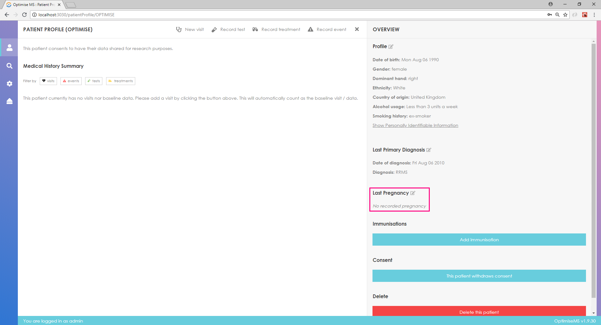Fill in the form. Click Submit to save the pregnancy data or Cancel.
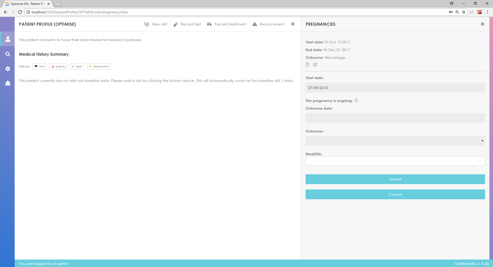Immunisation and Pregnancy data will be added to the Overview panel as shown below.

Click on new Visit (highlighted below) to create a new visit for the patient.

Fill the form in the right panel. Click Submit to create the visit or Cancel. All fields in this form are required in order to save the visit.

If the visit is successfully created, it will be added to the Medical History Summary in the main panel. Baseline visits are labelled as such.

All visits which are successfully created are added to the Medical History Summary and to the Timeline as shown below.

Click on Edit / Add to enter Symptoms and Signs for the visit.
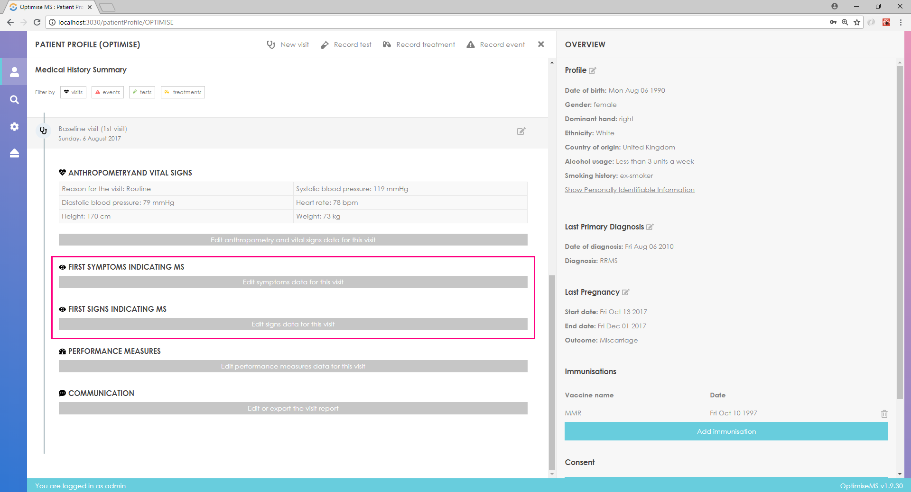Enter any present symptoms by clicking on the buttons or selecting a value from the drop-down lists in the section Symptoms in the right panel. For example, Emotional lability and Depression are selected below.

Scroll down to the Signs section and select the options as described for Symptoms above. Here, Memory and LEFT for Red desaturation in Cranial Nerves are selected.

Scroll down to the end of the form and click Save to confirm the data entry. You may edit this form at a later time. Click X at the top right corner to exit.

Click on Edit / Add to enter Performance Measures data.
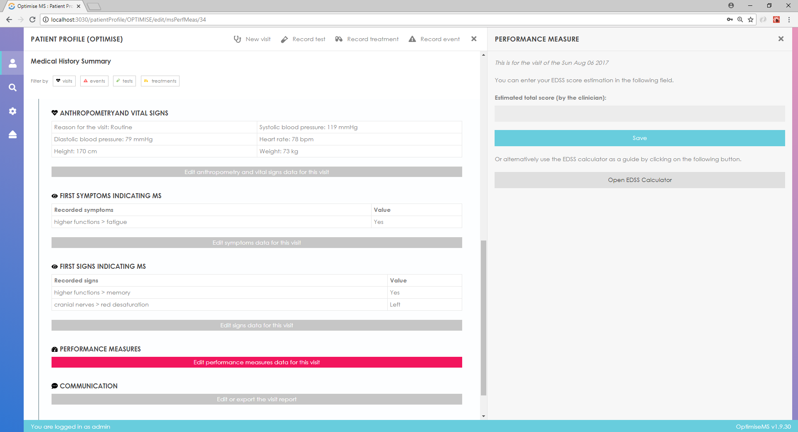Enter EDSS score and click Save. Alternatively, you may use the EDSS calculator by clicking on Open EDSS Calculator.

Hover over a score button to see the respective score description highlighted.

Select a score for each EDSS subcategory. The calculated total score will be shown in the Calculated score box. Ambulation score is required. Click Save to store the scores and then X to exit the calculator. To exit Performance Measures, click on X at the top right corner of the screen.
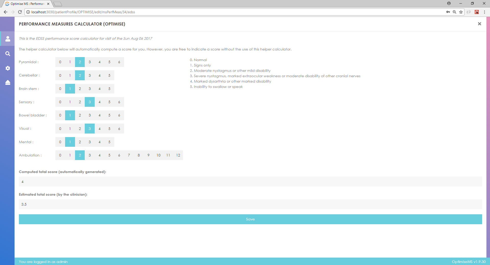The EDSS Total and EDSS Subscores will be listed under Performance Measures in the Medical History Summary.
Optimise:ms supports the generation of a visit report. Click on Edit / Add to enter Communication for the visit.

Click on the buttons to add the respective recorded data to the report. You may format the text using the available formatting tools. The text can be copied by clicking Click Save or X to cancel. The report can be updated at a later time to include data entered after its creation.

Click on Record test to create a new test for the patient.

Select a visit from the list if you want to associate the test with a visit. Otherwise, click on Record punctual occurrence.

Select the expected or actual date for the test, the type of test (Lumbar Puncture is selected below) and click Submit to create the new test. Click X to cancel.
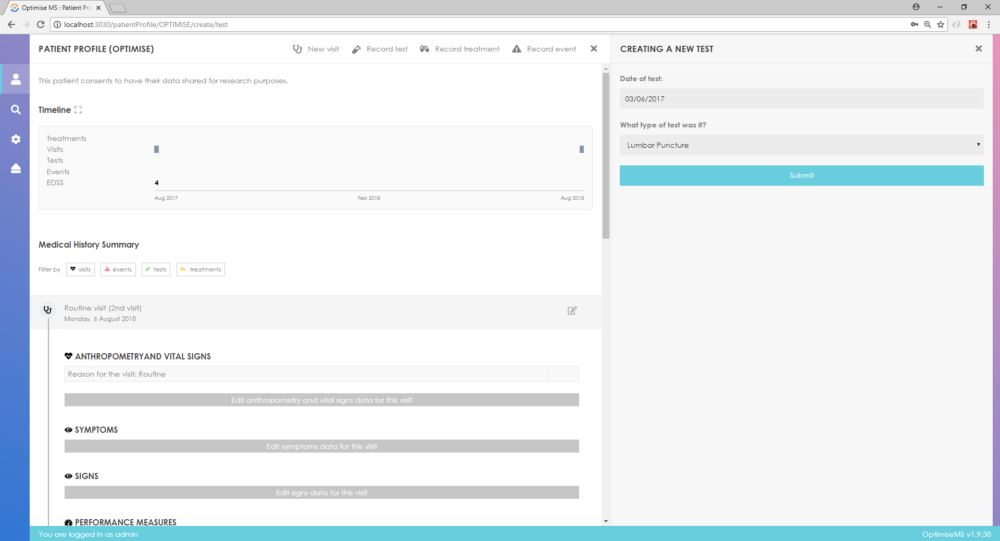If the test is successfully created, it will be added to the Medical History Summary in the main panel as shown below. The test is also shown on the Timeline (green symbol) above the Medical History Summary.
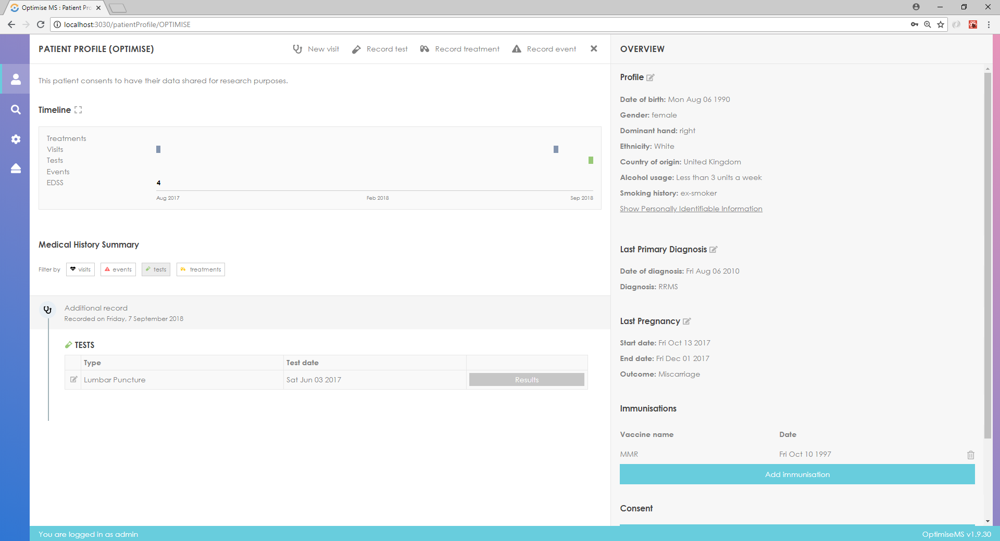Click on Results to enter further data for the test.

Fill the form and click Save or X.

A laboratory test entry includes tests such as Total WBC, Bilirubin and Anti-bodies. Fill in the form, scroll down to the end of the page and click Save. Click X to exit.

An MRI test allows T1 Hypointense Lesions, T2 Hyperintense Lesions and Gd Enhancing Lesions description.

An Evoked Potential test includes P100 and SEP.

Click on Record treatment to enter treatment data.
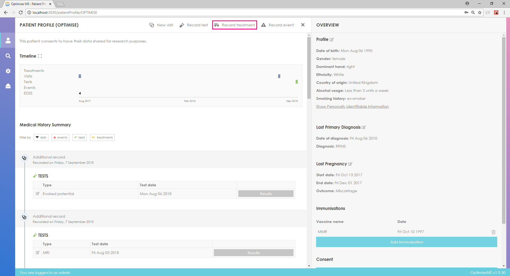Select a visit or Record punctual occurrence as described above for the Tests.

Fill in the treatment form in the right panel and click Submit to add the data or X to cancel. A warning message will be shown if required fields are not filled.
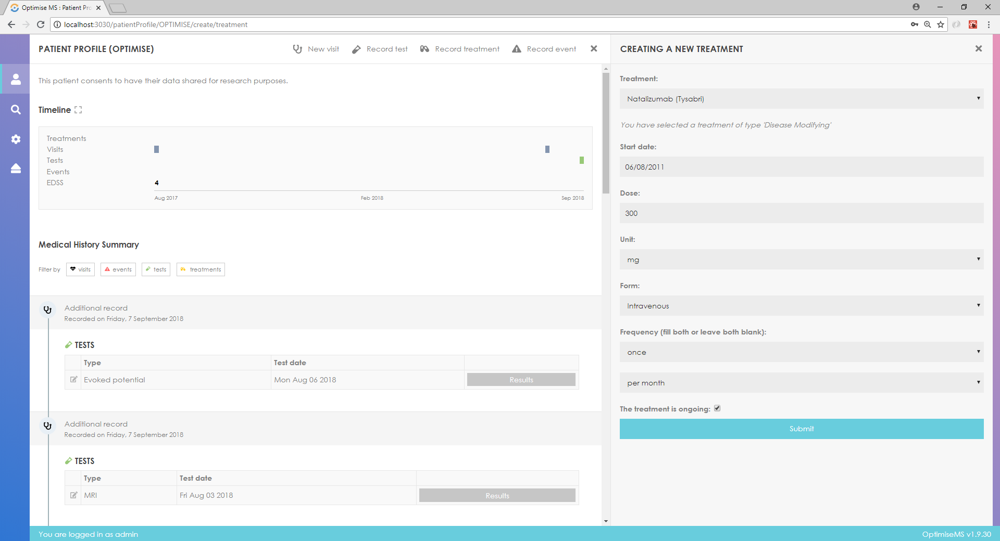Unticking the box labelled 'The treatment is ongoing' allows you to record a treatment discontinuation by entering the treatment end date.

The new treatment is added to the Medical History Summary and the Timeline (yellow symbol) as shown below.

To record any interruptions to the treatment or related Adverse Events, click on Interruptions and then Add interruptions in the right panel.


Fill the form and click on Submit to add the interruption details or Cancel. Click on X to exit the interruptions section.

Click on Record event to create a new clinical event.
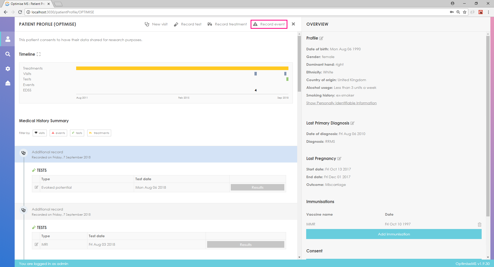Select from the list of visits or click Record punctual occurrence in case the event is not associated with an inpatient visit. Fill in the form and click Submit to add the event or X to exit without saving.
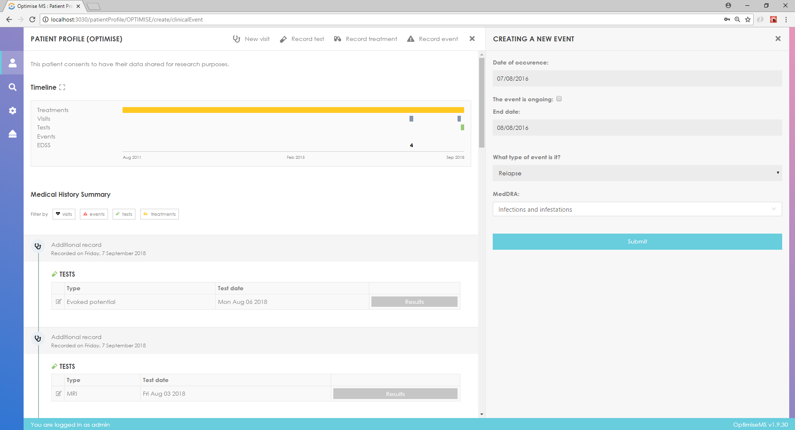The event will be added to the Medical History Summary and to the Timeline (red symbol).

To further describe the clinical event click on Data.

Select the functional systems affected by clicking on the buttons, fill in the rest of the form as necessary, click Save and then X to exit. Click X before clicking Save to cancel the data entry.
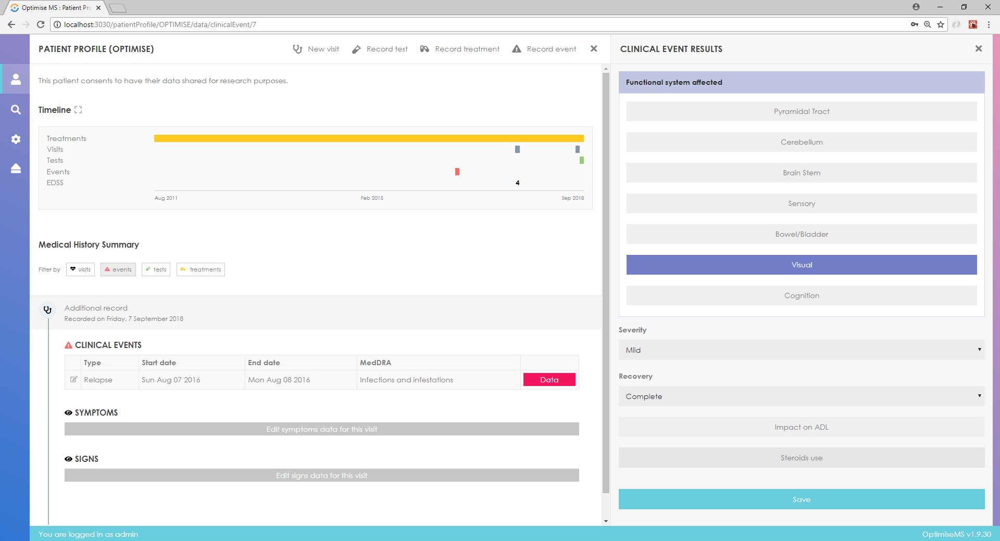Test, medication and clinical event data can be edited at any time by clicking the highlighted buttons in the Medical History Summary and following the steps described above.

In order to edit basic information about tests, medications and clinical events that was required for the creation of these entries such as dates and type or delete these entries, click on the icons shown below. Click on one of the buttons in the right panel to edit or delete the entry. The informative labels in the right panel will indicate which actions and modifications are allowed.

Using the Timeline
You may click on the Timeline to access (view/edit) the corresponding entry in Medical History Summary.

Click on the small icon next to Timeline highlighted below to maximise the timeline.

Follow the instructions below the timeline to interact with it. Zooming in and zooming out as well as navigation to a specific time period are available. The timeline depicts recorded Immunisations, Treatments, Visits, Tests, Clinical Events and EDSS using different colouring. Click X to return to patient profile.

Exporting patient data
Optimise:ms currently supports export of patient data in .json and .csv files. This is available in the right panel on the Patient Search page.
In order to export the database as json and csv files, click on the export button (highlighted) and choose where to save the ZIP folder which you can then extract. You may want to change the name of this folder- the default is attachment.zip.

Admin menu
Click on the button located in the left panel as shown below to access the Admin Menu.
The administrator can manage Optimise:ms users (create and delete user accounts), view the action log, where all user actions are recorded, and read messages about the software by accessing the Admin Menu.
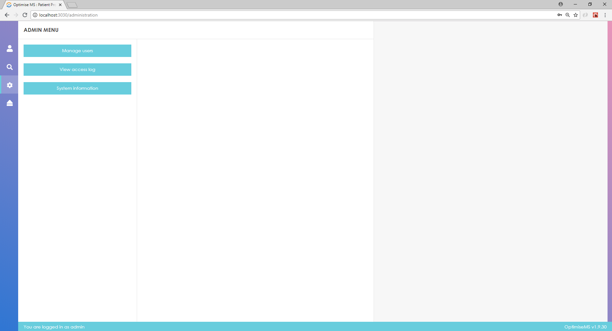The administrator can manage the users (create and delete user accounts) by accessing the relevant option (Manage users) in Admin menu. In order to update or delete a user account, click on the respective entry in the list of registered user accounts in the middle panel.

To update the password for a particular user, select the user from the list, fill in the form as shown below and click Submit. Click Cancel to cancel the update.
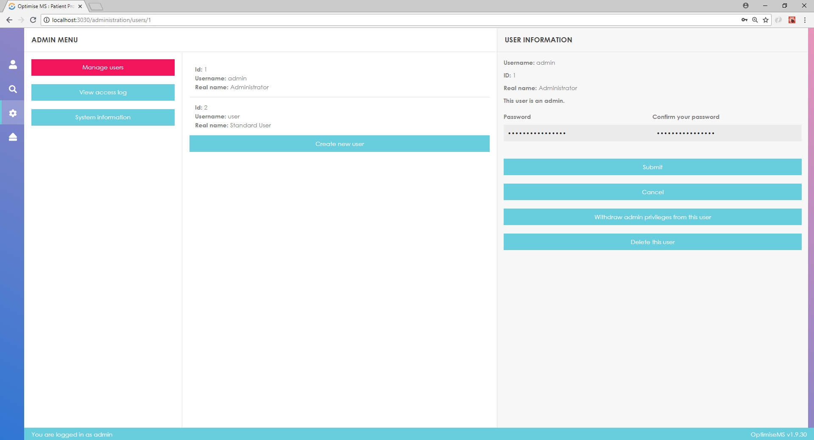To delete a user, select from the users list and click on Delete.

A warning message will appear. Click X to cancel the deletion or YES, I AM SURE! to confirm the deletion.

You may create a new user account by clicking on the Create a new user button.

Fill in the highlighted form and click Submit.

The following error message is shown if the submitted form is incomplete. Please complete all fields and re-submit.
The action log shows a detailed description of all the actions performed by users.

System information is also available in the Admin Menu.

Logging out
To log out click on the icon located in the panel on the left of the page as shown below.